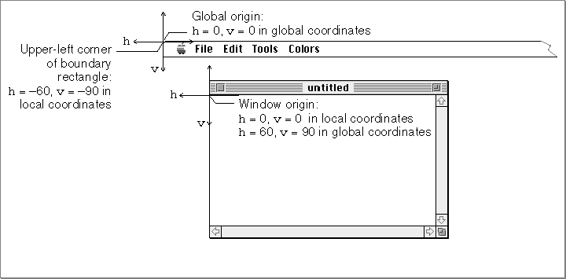

Legacy Document
Important: The information in this document is obsolete and should not be used for new development.
Important: The information in this document is obsolete and should not be used for new development.


About Basic QuickDraw
Basic QuickDraw, designed for the earliest Macintosh models with their built-in black-and-white screens, is a collection of system software routines that your application can use to manipulate images on all Macintosh computers.
Basic QuickDraw performs its operations in a graphics port based on a data structure of types
- Note All Macintosh computers support basic QuickDraw. Only those computers based on the Motorola 68000 processor, such as the Macintosh Classic and PowerBook 100 computers, provide no support for Color QuickDraw.

GrafPort. (Color QuickDraw, described in the chapter "Color QuickDraw," can work with data structures of typeGrafPortorCGrafPort, the latter offering extensive color and grayscale facilities.)As described in the chapter "Introduction to QuickDraw," each graphics port has its own local coordinate system. All fields in a graphics port are expressed in these coordinates, and all calculations and actions that QuickDraw performs use the local coordinate system of the current graphics port. The mathematical constructs of this coordinate system are described next.
The Mathematical Foundations of QuickDraw
QuickDraw defines some mathematical constructs that are widely used in its procedures, functions, and data types:\xDDthe coordinate plane, the point, the rectangle, and the region. Points are defined in terms of the coordinate plane. Points in turn are used to define a rectangle. Rectangles assign coordinates to boundaries and images, and rectangles frame graphic objects such as regions and ovals. Regions define arbitrary areas on the coordinate plane.For example, each graphics port has its own local coordinate system on the coordinate plane; the location of the graphics pen used for drawing into a graphics port is expressed as a point; a commonly used rectangle is the port rectangle, which in a graphics port for a window represents the window's content area; and a commonly used region in QuickDraw is the visible region, which in a graphics port for a window represents the portion of the window that's actually visible on the screen--that is, the part that's not covered by other windows.
The Coordinate Plane
As described in the chapter "Introduction to QuickDraw," all information about location or movement is specified to QuickDraw in terms of coordinates on a plane. The plane is a two-dimensional grid whose coordinates range from -32768 to 32767. On a user's computer, there is one global coordinate system that represents all potential QuickDraw drawing space. The origin of the global coordinate system--that is, the point with a horizontal coordinate of 0 and a vertical coordinate of 0--is at the upper-left corner of the user's main screen. Each graphics port on that user's computer has its own local coordinate system, which is defined relative to the port rectangle of the graphics port. Typically, the upper-left corner of a port rectangle is assigned a local horizontal coordinate of 0 and a local vertical coordinate of 0, although you can use theSetOriginprocedure to change the coordinates of this corner.
So that the user can select onscreen objects across this coordinate plane, QuickDraw predefines several cursors, described in the chapter "Cursor Utilities" in this book, that the user manipulates with the mouse.
- IMPORTANT
- QuickDraw stores points and rectangles in its own data structures of types
PointandRect. In these structures, the vertical coordinate (v) appears first, followed by the horizontal coordinate (h). However, in parameters to all QuickDraw routines, you specify the horizontal coordinate first and the vertical coordinate second.Points
A point is located by the combination of a vertical coordinate and a horizontal coordinate. Points themselves are dimensionless; if a visible pixel is located at a point, the pixel hangs down and to the right of the point. You can store the coordinates of a point into a variable of typePoint, which QuickDraw defines as a record of two integers.
TYPE VHSelect = (v,h); Point = RECORD CASE Integer OF 0: (v:\xDD\xDD Integer: {vertical coordinate} h:\xDD\xDD Integer); {horizontal coordinate} 1: (vh:\xDD\xDDARRAY[VHSelect] OF Integer); END;The third field of this record lets you access the vertical and horizontal coordinates of a point either individually or as an array. For example, the following code fragment illustrates how to assign values to the coordinates of points:
VAR westPt, eastPt: Point; westPt.v := 40; westPt.h := 60; eastPt.vh[v] := 90; eastPt.vh[h] := 110;"Manipulating Points in Graphics Ports" beginning on page 2-47 describes several QuickDraw routines you can use to change and calculate points.Rectangles
Any two points can define the upper-left and lower-right corners of a rectangle. Just as points are infinitely small, the borders of the rectangle are infinitely thin.The data type for rectangles is
Rect, and the data structure consists of either four integers or two points:
TYPE Rect = RECORD CASE Integer OF {cases: four sides or two points} 0: (top: Integer; {upper boundary of rectangle} left: Integer; {left boundary of rectangle} bottom: Integer; {lower boundary of rectangle} right: Integer); {right boundary of rectangle} 1: (topLeft: Point; {upper-left corner of rectangle} botRight: Point); {lower-right corner of rectangle} END;You can access a variable of typeRecteither as four boundary coordinates or as two diagonally opposite corner points. All of the following coordinates to the rectangle namedshipRectare permissible:
VAR shipRect: Rect; {specify rectangle with boundary coordinates} shipRect.top := 20; shipRect.left := 20; shipRect.bottom := 70; shipRect.right := 70; {specify rectangle with upper-left and bottom-right points} shipRect.topLeft := (20,20); shipRect.botRight := (70,70); {specify individual coordinates for rectangle's upper-left } { and bottom-right points} shipRect.topLeft.v := 20; shipRect.topLeft.h :=20; shipRect.botRight.v := 70; shipRect.botRight.h :70; {specify individual coordinates for rectangle's upper-left } { and bottom-right points, where the points are arrays} shipRect.topLeft.vh[v] := 20; shipRect.topLeft.vh[h] := 20; shipRect.botRight.vh[v] := 70; shipRect.botRight.vh[h] := 70;As described in the chapter "QuickDraw Drawing" in this book, many calculations and graphics operations can be performed on rectangles.
- Note
- If the bottom coordinate of a rectangle is equal to or less than the top, or the right coordinate is equal to or less than the left, the rectangle is an empty rectangle, one that contains no data.
Regions
The data structure for a region consists of two fixed-length fields followed by a variable-length field:
TYPE Region = RECORD rgnSize:\xDD\xDDInteger;{size in bytes} rgnBBox:\xDD\xDDRect; {enclosing rectangle} {more data if region is not rectangular} END;ThergnSizefield contains the size, in bytes, of the region. The maximum size is 32 KB when using basic QuickDraw (and 64 KB when using Color QuickDraw). ThergnBBoxfield is a rectangle that completely encloses the region.The simplest region is a rectangle. In this case, the
rgnBBoxfield defines the entire region, and there's no optional region data. For rectangular regions (or empty regions), thergnSizefield contains 10. The data for more complex regions is stored in a proprietary format.As described in the chapter "QuickDraw Drawing" in this book, you can gather an arbitrary set of spatially coherent points into a region and rapidly perform complex manipulations and calculations on them.
The Black-and-White Drawing Environment: Basic Graphics Ports
A graphics port is a complete drawing environment that defines where and how graphics operations take place. You can have many graphics ports open at once; each one has its own local coordinate system, drawing pattern, background pattern, pen size and location, font and font style, and bitmap or pixel map (for a color graphics port). You can quickly switch from one graphics port to another.As described in the chapter "Window Manager" in Inside Macintosh: Macintosh Toolbox Essentials, the Window Manager incorporates a graphics port in each window record it creates. Similarly, the Printing Manager (described in the chapter "Printing Manager" in this book) incorporates a graphics port in each print record it creates. You can also use the
NewGWorldfunction to create graphics ports that are not in a window, and hence not visible on a screen. As described in the chapter "Offscreen Graphics Worlds" in this book, such offscreen graphics worlds are useful for preparing images for display; when the image is ready, you can quickly copy it to an onscreen graphics port.There are two kinds of graphics ports: the black-and-white, basic graphics port based on the data structure of type
GrafPort, and the color graphics port based on the data structure of typeCGrafPort(used only with Color QuickDraw). The basic graphics port is discussed here; the color graphics port is discussed in the chapter "Color QuickDraw." (Using the basic eight-color system described in the chapter "QuickDraw Drawing," you can also use a basic graphics port to display eight predefined colors.)The
GrafPortrecord is diagrammed in Figure 2-1. Some aspects of its contents are discussed after the figure; see page 2-27 for a complete description of the record fields. Your application should not directly set any fields of aGrafPortrecord; instead you should use QuickDraw routines to manipulate them.Figure 2-1 The
GrafPortrecord and theBitMaprecordBitmaps
TheportBitsfield of aGrafPortrecord contains the bitmap, a data structure of typeBitMapthat defines a black-and-white physical bit image in terms of the QuickDraw coordinate plane. The structure of a bitmap is illustrated in Figure 2-1.The
baseAddrfield of theBitMaprecord contains a pointer to the beginning of the bit image. (There can be several bitmaps pointing to the same bit image, each imposing its own coordinate system on it.) A bit image is a collection of bits in memory that form a grid. To visualize the relationship between the bits in memory and the bits in an image, take a sequence of words in memory and lay them end to end so that bit 15 of the lowest-numbered word is on the left and bit 0 of the highest-numbered word is on the far right. Then take this line of bits and divide it, on word boundaries, into a number of equal-size rows. Stack these rows vertically so that the first row is on the top and the last row is on the bottom. The result is a matrix like the one shown in Figure 2-2--rows and columns of bits, with each row containing the same number of bytes. A bit image can be any length that's a multiple of the row's width in bytes.
The screen itself is one large visible bit image. On a Macintosh Classic, for example, the screen is a 342-by-512 bit image, with a row width of 64 bytes. These 21,888 bytes of memory are displayed as a matrix of 175,104 pixels on the screen; each bit corresponds to one screen pixel. If a bit's value is 0, its screen pixel is white; if the bit's value is 1, it is black. (Color QuickDraw can work with images that store more than 1 bit for each screen pixel. Such images are called pixel images; they are described in the chapter "Color QuickDraw" in this book.)The
rowBytesfield of the bitmap contains the width of a row of the image in bytes. A bitmap must always begin on a word boundary and contain an integral number of words in each row. The value of therowBytesfield must be less than $4000.The
boundsfield is the bitmap's boundary rectangle, which serves two purposes. First, it links the local coordinate system of a graphics port to QuickDraw's global coordinate system. Second, it defines the area of an image into which QuickDraw can draw.The coordinates of the upper-left corner of the boundary rectangle define the distance from the origin of the graphics port's local coordinate system to the origin of QuickDraw's global coordinate system. In this way, the boundary rectangle links the local coordinate system of a graphics port to QuickDraw's global coordinate system. For example, by subtracting the vertical and horizontal coordinates of the upper-left corner of the boundary rectangle from any other point local to the graphics port, you convert that point into global coordinates. By comparing the origin of a window to the origin of the main screen, Figure 2-3 illustrates the relationship of the boundary rectangle's local coordinate system to QuickDraw's global coordinate system.
Figure 2-3 Relationship of the boundary rectangle and the port rectangle to the global coordinate system

The origin of the local coordinate system is defined by the upper-left corner of the port rectangle for the graphics port. (The port rectangle, as described in "The Graphics Port Drawing Area" on page 2-10, is specified in theportRectfield of theGrafPortrecord.) In a graphics port for a window, this point is called the window origin, and it marks the upper-left corner of a window's content region. As shown in Figure 2-3, this point usually has horizontal and vertical coordinates of 0 in the local coordinate system.The origin for the global coordinate system has horizontal and vertical coordinates of 0 in the global coordinate system, and, as shown in Figure 2-3, this point lies at the upper-left corner of the main screen.
By default, QuickDraw assigns the entire main screen as the boundary rectangle for a bitmap. Therefore, the local coordinates of the upper-left corner of the boundary rectangle reflect the distance from the window origin to the screen origin. In Figure 2-3, for example, the upper-left corner of the boundary rectangle has a horizontal coordinate of -60 and a vertical coordinate of -90 in the local coordinate system because the window origin has a horizontal coordinate of 60 and a vertical coordinate of 90 in the global coordinate system.
The boundary rectangle defines the area of an image into which QuickDraw can draw. The upper-left corner of the boundary rectangle is aligned around the first bit in the bit image. The width of the boundary rectangle determines how many bits of one row are logically owned by the bitmap. This width must not exceed the number of bits in each row of the bit image (although the width may be smaller than the number of bits in each row).
The height of the boundary rectangle determines how many rows of the bit image are logically owned by the bitmap. The number of rows enclosed by the boundary rectangle must not exceed the number of rows in the bit image (although the number of rows enclosed by the boundary rectangle may be fewer than those in the bit image).
Normally, the boundary rectangle exactly encloses the bit image. If the rectangle is smaller than either dimension of the image, the rightmost bits in each row, or the last rows in the image, or both, are not considered part of the bitmap. All drawing that QuickDraw does in a bitmap is clipped to the edges of the boundary rectangle--bits (and their corresponding pixels) that lie outside the rectangle are unaffected by drawing operations.
The bitmap may be changed to point to a different bit image in memory. All graphics routines work in exactly the same way regardless of whether their effects are visible on the screen. Your application can, for example, prepare an image to be printed on a printer without ever displaying the image on the screen (as described in the chapter "Printing Manager" in this book), or it can prepare an image in an offscreen graphics world before transferring it to the screen (as described in the chapter "Offscreen Graphics Worlds" in this book).
The Graphics Port Drawing Area
Several fields in theGrafPortrecord define your application's drawing area.The
portRectfield denotes the port rectangle that defines a subset of the bitmap to be used for drawing.\xDDAll drawing done by your application occurs inside the port rectangle. As explained in the previous section, the boundary rectangle defines the local coordinate system used by the port rectangle. The port rectangle usually falls within the bitmap's boundary rectangle, but it's not required to do so.The
visRgnfield designates the visible region of the graphics port. The visible region is the region of the graphics port that's actually visible on the screen. The visible region is manipulated by the Window Manager. For example, if the user moves one window in front of another, the Window Manager logically removes the area of overlap from the visible region of the window in back. When you draw into the back window, whatever's being drawn is clipped to the visible region so that it doesn't run over onto the front window.The
clipRgnfield specifies the graphics port's clipping region, which you can use to limit drawing to any region within the port rectangle. The initial clipping region of a graphics port is an arbitrarily large rectangle: one that covers the entire QuickDraw coordinate plane. You can set the clipping region to any arbitrary region, to aid you in drawing inside the graphics port. If, for example, you want to draw a half-circle on the screen, you can set the clipping region to half of the square that would enclose the whole circle, and then draw the whole circle. Only the half within the clipping region is actually drawn in the graphics port.All drawing in a graphics port occurs in the intersection of the graphics port's boundary rectangle and its port rectangle, and, within that intersection, all drawing is cropped to the graphics port's visible region and its clipping region. No drawing occurs outside the intersection of the port rectangle, the visible region, and the clipping region. Figure 2-4 illustrates several of the previously described fields of the
GrafPortrecord.Figure 2-4 Comparing the boundary rectangle, port rectangle, visible region, and clipping region
As shown in this figure, QuickDraw assigns the entire screen as the boundary rectangle for window A. This boundary rectangle shares the same local coordinate system as the port rectangle for window A. Although not shown in this figure, the upper-left corner--that is, the window origin--of this port rectangle has a horizontal coordinate of 0 and a vertical coordinate of 0, whereas the upper-left corner for window A's boundary rectangle has a horizontal coordinate of -40 and a vertical coordinate of -40.In this figure, to avoid drawing over scroll bars when drawing into window B, the application that created that window has defined a clipping region that excludes the scroll bars.
Graphics Port Bit Patterns
ThebkPatandfillPatfields of aGrafPortrecord contain patterns used by certain QuickDraw routines. ThebkPatfield contains the background pattern that's used when an area is erased or when bits are scrolled out of it. When asked to fill an area with a specified pattern, QuickDraw stores the given pattern in thefillPatfield and then calls a low-level drawing routine that gets the pattern from that field.Bit patterns--which are usually black and white, although any two colors can be used on a color screen--are described in the chapter "QuickDraw Drawing" in this book; patterns with colors at any pixel depth, called pixel patterns, are described in the chapter "Color QuickDraw" in this book.
The Graphics Pen
ThepnLoc,pnSize,pnMode,pnPat, andpnVisfields of a graphics port deal with the graphics pen. Each graphics port has one and only one such pen, which is used for drawing lines, shapes, and text. The pen has four characteristics:\xDDa location, a size (height and width), a drawing mode, and a drawing pattern. The routines for determining and changing these four characteristics are described in the chapter "QuickDraw Drawing."Text in a Graphics Port
ThetxFont,txFace,txMode,txSize, andspExtrafields of a graphics port determine how text is drawn--the typeface, font style, and font size of characters and how they are placed in the bit image. QuickDraw can draw characters as quickly and easily as it draws lines and shapes, and in many prepared typefaces. The characters may be drawn in any size and font style (that is, with stylistic variations such as bold, italic, and underline). Text is drawn with the base line positioned at the pen location.For information on using text in your application, including how to use the QuickDraw routines that manipulate text characteristics stored in a graphics port, see Inside Macintosh: Text.
The Limited Colors of a Basic Graphics Port
ThefgColor,bkColor, andcolrBitfields contain values for drawing in the eight-color system available with basic QuickDraw. Although limited to eight predefined colors, this system has the advantage of being compatible across all Macintosh platforms. ThefgColorfield contains the graphics port's foreground color, andbkColorcontains its background color. ThecolrBitfield tells the color imaging software which plane of the color picture to draw into.These colors are recorded when drawing into a QuickDraw picture (described in the chapter "Pictures" in this book)--for example, drawing a line with a red foreground color stores a red line in the picture--but these colors cannot be stored in a bitmap. The basic graphics port's color drawing capabilities are discussed in the chapter "QuickDraw Drawing."
Other Fields
ThepatStretchfield is used during printing to expand patterns if necessary. Your application should not change the value of this field.The
picSave,rgnSave, andpolySavefields reflect the states of picture, region, and polygon definitions, respectively. To define a region, for example, you open it, call routines that draw it, and then close it. The chapter "QuickDraw Drawing" describes in detail how to use pictures, regions, and polygons to draw into a graphics port.Finally, the
grafProcsfield may point to a special data structure that your application can store into if you want to customize QuickDraw drawing routines or use QuickDraw in other specialized ways, as described in the chapter "QuickDraw Drawing."